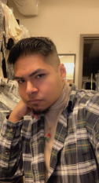

Okay so it's my turn....Hello!  My Name is Victor Vega, I'm 27 years old born and raised here in San Antonio, Tx. I've been in the hospitality field for 7 years now and currently working at the Hotel Emma in the Pearl District. Come and visit! I am a Libra so all these decisions I've had to make have been very difficult but it's been a lot of fun. As you can see from the site I have created I am a very art driven person. I have always been fascinated with art, pop culture, fashion, music, etc. I am a returning student working towards finishing to receive my certificate in digital media. In this project I focused on more textile art and history but another type of art I do love is digital design. I am a person who would love to make his own posters on photoshop. I love creating my own version of something either just for the fun of it or to compensate for not seeing what I like in real life. I like making my own creations digitally so doing something like site was very different.